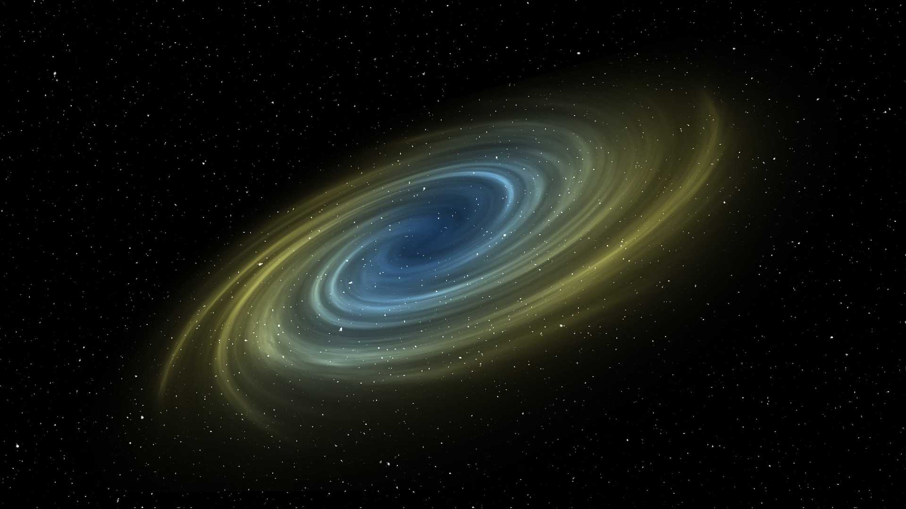
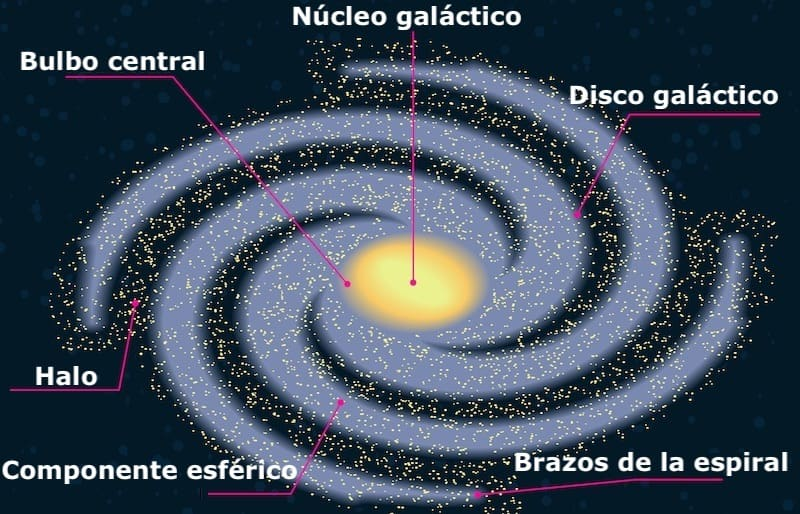
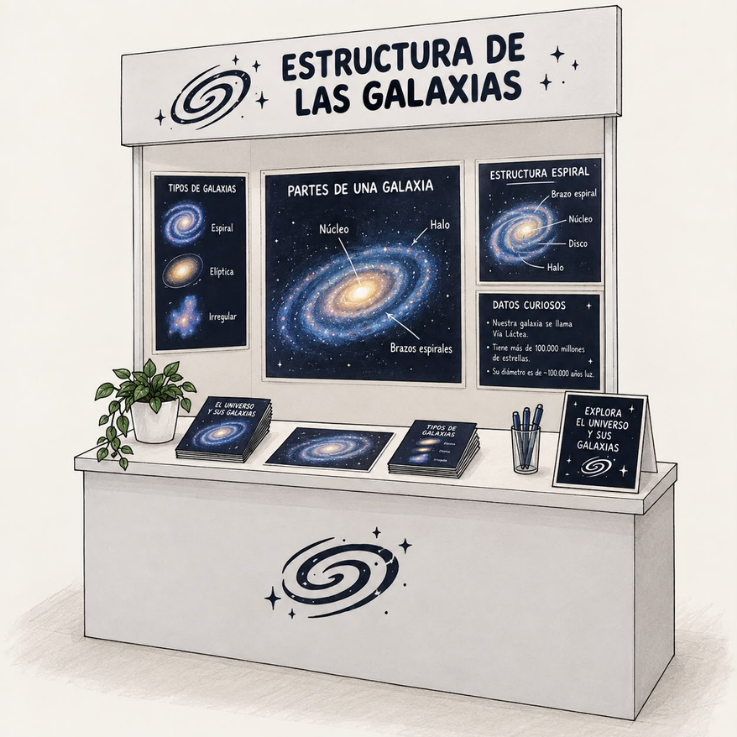

Explorando el Universo
Un recorrido por el bulbo, el disco y el halo que sostienen a cientos de miles de millones de estrellas.
Una galaxia no es una nube desordenada de estrellas: tiene una arquitectura definida, con un núcleo denso, un disco donde giran brazos espirales y un halo mucho más amplio que envuelve todo lo demás. A esa organización en capas se le llama estructura galáctica.
Entender esa estructura importa porque cada capa guarda una historia distinta: el bulbo conserva las estrellas más viejas, el disco es donde todavía nacen estrellas nuevas, y el halo esconde la mayor parte de la masa de la galaxia en forma de materia oscura. Estudiarla es, en el fondo, leer la historia de cómo se formó nuestro propio hogar en el universo.
En este sitio el visitante va a encontrar los componentes principales de una galaxia espiral, el mecanismo que explica por qué se ven los brazos espirales, algunas cifras que dan una idea real de la escala de la Vía Láctea, y la relación de todo esto con el modelo físico que verá en nuestro stand.
Comprender cómo se organiza internamente una galaxia espiral y qué papel cumple cada uno de sus componentes, para que el visitante relacione ese orden con el modelo físico presentado en el stand.
Una galaxia espiral se organiza en tres grandes partes. El bulbo es la concentración central, esférica y densa, formada sobre todo por estrellas viejas. El disco es la zona plana que gira alrededor del bulbo, contiene gas, polvo y las estrellas más jóvenes, y es donde se dibujan los brazos espirales. Por último, el halo es una envoltura mucho más grande y difusa, casi esférica, que agrupa cúmulos globulares y la mayor parte de la materia oscura de la galaxia, aunque casi no emite luz visible.

Los brazos espirales no son cadenas fijas de las mismas estrellas girando juntas para siempre. Se explican con la teoría de las ondas de densidad: una onda de mayor densidad de materia recorre el disco a una velocidad distinta a la de las estrellas, comprimiendo el gas a su paso. Esa compresión dispara la formación de estrellas nuevas, muy brillantes y de vida corta, que se encienden justo donde pasó la onda. Por eso los brazos se ven iluminados, aunque las estrellas que los atraviesan cambian constantemente: el brazo es un patrón que se mueve, no un grupo fijo de estrellas.
100 000 años luz
Es, aproximadamente, el diámetro del disco de la Vía Láctea: la distancia que recorrería la luz en cien mil años para cruzarlo de lado a lado.
Algunas magnitudes ayudan a dimensionar lo que significa esa estructura. La Vía Láctea tiene entre 100 000 y 400 000 millones de estrellas repartidas en sus distintas capas. El disco tiene un grosor de apenas unos 1000 años luz, mucho menor que su diámetro, lo que explica por qué se ve como una lámina delgada y no como una esfera. El Sol se encuentra a unos 27 000 años luz del centro, en uno de los brazos secundarios, y completa una vuelta alrededor del núcleo cada 225 a 250 millones de años, un período conocido como año galáctico.

Valor: 1
Velocidad orbital estimada: —
Zona galáctica: —
Valor: 1.5
En el stand, el visitante encuentra un modelo físico a escala de una galaxia espiral, con capas separadas y manipulables que representan el bulbo, el disco y el halo. Al mover el disco puede simular la rotación diferencial: notar que las zonas cercanas al centro giran distinto a las zonas externas, la misma idea detrás de la curva de rotación que se explica en el sitio web.
| El experimento físico muestra | El sitio web muestra |
|---|---|
| Modelo a escala con las capas visibles y separables de una galaxia espiral. | La explicación de qué es cada capa y qué función cumple. |
| Simulación manual de la rotación diferencial del disco. | La curva de rotación y las cifras exactas de tamaño, masa y periodo de giro. |
| Comparación visual entre distintas formas de galaxias. | El mecanismo de las ondas de densidad que explica los brazos espirales. |
